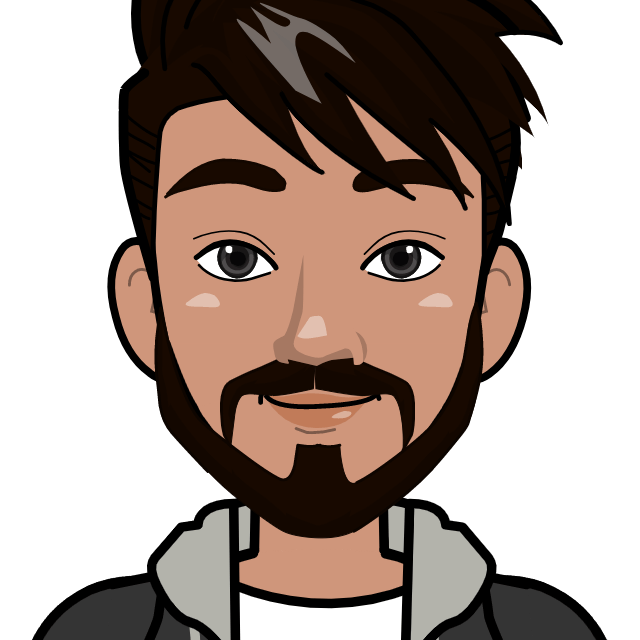

Pavlos Apostolakis
© Copyright Pavlos Apostolakis
© Copyright Pavlos Apostolakis
Hi there! My name is Pavlos Apostolakis and I am a computer science and electronic systems student at the International Hellenic University. I was born on October 30th, 2002 and I am originally from Kalamarias. I received my high school education from Technical High School 1st EPAL Kalamarias, where I had the opportunity to participate in many competitions and develop my skills in technology and programming. Since starting my studies at the International Hellenic University, I have gained a strong foundation in computer science and electronic systems and I am eager to continue learning and growing in my field. In addition to my studies, I am also working as a freelance web developer. This has allowed me to gain practical experience and apply my knowledge in a professional setting. I am a cooperative person and enjoy working with others. I believe that collaboration is key to achieving success and I always strive to be a team player. I am also willing to learn new things and meet new people, as I believe that these experiences help me grow both personally and professionally. In my free time, I enjoy listening to music, especially rock, punk, rap, and indie. I also love nature and like to go hiking and travel to the mountains whenever I can. I am excited to share my skills and experiences with you and I hope to have the opportunity to work with you in the future. Thank you for considering me for your project or opportunity. Please feel free to take a look around my portfolio and reach out to me if you have any questions.
.JPG)